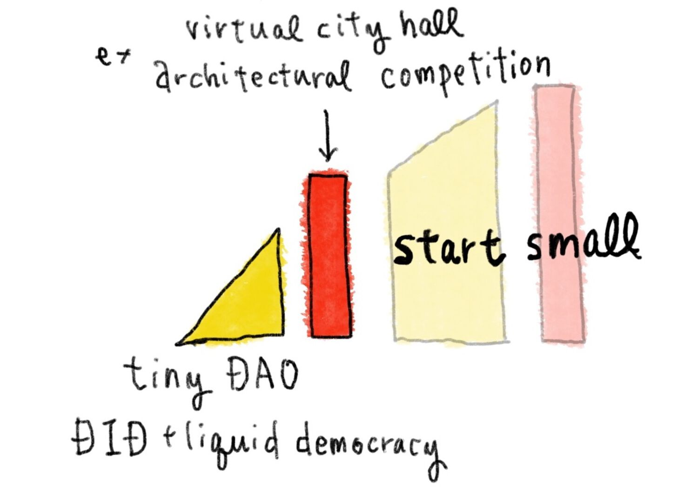

Makuhari City Concept Draft
1 Intro: Smart cities are dumb.
Figure 1: Current state of digital transformation in the context of cities
Hyper loops, autonomous cars and smart street lights sounds all great.
Predictive policing eliminates potential crimes, free wifi everywhere, drones delivering your favorite coffee.
Under the name of IoT, your devices are all connected to each other. Within that, you ask for a joke to the AI with a friendly name which you trust that calculates your social score accurately. You are constantly watched by entities big and small, while intermediate data brokers sell and profit.
Everything seems to be in it’s right place. … but is it?
Some think this version of a smart city is dumber than ever, claiming that adopting every new shiny technology with innocent feelings dreaming of the world of total efficiency will result in a dystopia.
Figure 2: There is discrepancy between the social layer and the implementation of digital twins related technology.
My two answers are bot ambivalent. I don’t know, or it depends.
Either way one thing missing is the community. People deciding on their own physical infrastructure, thinking to improve the community striving for equality and inclusiveness. Sharing knowledge of new attempts to make the region safer and learning from mistakes is important than mindlessly selling personal data sucked through your phone and free wifi Kiosks.
This is participation. Apart from it’s fancy projection mapping and mesmerizing graphics, the core value of the City Scope is the ability to deliberate while surrounding a physical table. Simulation that supports people talking to each other to meet consensus. We want to reveal the properties of this type of smartness.
Like the city scipe, we want to somehow bind the two soft intangible media together; the digital twin and the community to meet comunity needs.
Let’s look at a different example, also involving an intangible entity.
2 Real Estate
A corporation is one type of collective intelligence, which is structured around hierarchy, top down decisions to maximize profit to sustain. Like a community, it’s an intangible entity, that owns physical property. These corporations often gets criticized increasing land value through re-development; gentrification. Making it unaffordable to live for a diverse community often providing essential service.
For the region it’s not all bad. These development plans do have incentives to nourish cultural activity like building museums and pocket parks adding QoL to the neighborhood. But only if this leads to increase in land value = profit.
Figure 3: Real estate corporations, while being an intangible institution owns portions of physical property. And although for profit, they also have an incentive to invest in cultural assets to increase the overall land value that they own.
The core proposal of this document is this. Why not have the community to own the region by the help of DAOs. A DAO is an organization without a centralized form of power that governs itself with the help of technology, short for decentralized autonomous organizations. They certainly need to be profitable to some degree to be a sustainable community, but the decision is not from a corporate pyramid kind of collective intelligence.
Public impressions of DAOs are not great. In fact the most famous example is a disastrous one, when a hacker spoofed one third of the investment money by exploiting the application running on top of the block-chain. Defenders of the concept says it wasn’t the underlying infrastructure that failed but the additional layer that was developed above the block chain mechanism. It’s still a big lesson learned that it’s difficult to implement it correctly.
Despite the boring nature when it’s working, some examples show success in collectively reaching consensus using this technology, and not all DAO’s should exclusively focus on investment but direct it to create a sustainable community.
Plus, new ideas for alternative democratic processes are worth trying out such as liquid democracy1, and new ways are proposed to safely handle personal data, while avoiding locking it down to one centralized service. It’s called web 3.0.
Figure 4: Why not have a DAO to acquire physical assets with a flexible decision making process, backed by safe and non-invasive web3 technology like Decentralized Identities?
3 But, wait … isn’t this a City?
Yes, this really looks like governance as we know it, except for an weird flexible democratic process and some black magic cryptography. If the community is deciding on how they maintain physical assets as their environment, this is very close to a city governing itself.
Figure 5: examples of consensus
With this in mind enter Makuhari City (ÂπﺵÂ∏Ç). “Makuhari” is a district not too far east of the Tokyo Metropolitan area, mostly consisted of landfills. The large-scale convention centers in this area are known as locations for expo level gatherings and events. Because of this, the site is widely misunderstood as “Makuhari City” by the people of Tokyo. It is not an official administrative district, but only a common name that refers to the Hanamigawa and Mihama wards of Chiba City, Chiba Prefecture.
The mayor of Chiba City himself corrected this fact after receiving inquiries from people looking for Makuhari City’s location, believing that it exists. Aoki Ryuta suggested that we take advantage of this and plan “Makuhari City,” an administrative district that exists in people’s minds but does not exist.
Figure 6: Makuhari city
4 Steps to proceed
Enacting a DAO whose primary focus is real estate acquisition and at the same time respecting the surrounding culture can not be accomplished overnight.
This grand ambition has to start small. We first begin to develop a minimal example of a DAO, utilizing Decentralized Identities and Liquid Democracy. Then, we will test the system by conducting a collective decision-making project. An example of such a project could be a virtual architectural competition to determine the (virtual) city hall’s design.

Figure 7: Dev milestones (short term)
If this succeeds, we can further develop eventually building up to acquire real estate, while collectively deciding how to maintenance or even the design of the space may be selected collectively using the system. If the system works, this might also help traditional types of municipals for participatory design projects, by using the open sourced version of the system.
Figure 8: Dev milestones (extended)
This was discussed and brought up in the “Makuhari city, gov tech seminar series” organized by MetaCity. The participated panels were Hiroyuki Kurimoto, Masayoshi Mitsui, Ryuta Aoki, and Yasushi Sakai. Any credit for the idea resides to them.
5 Core contribution
- Propose an more inclusive organizational entity that better suits for community needs, rather selling new technology purely for profit.
- Build technology that is safe to use, while supporting community consensus building.
- Provide tools for municipalities to support organized participatory design events. (By open sourcing)
Footnotes:
It’s not new actually, it’s a generalized method of fractional voting that can handle direct and in-direct democracy at the same time.